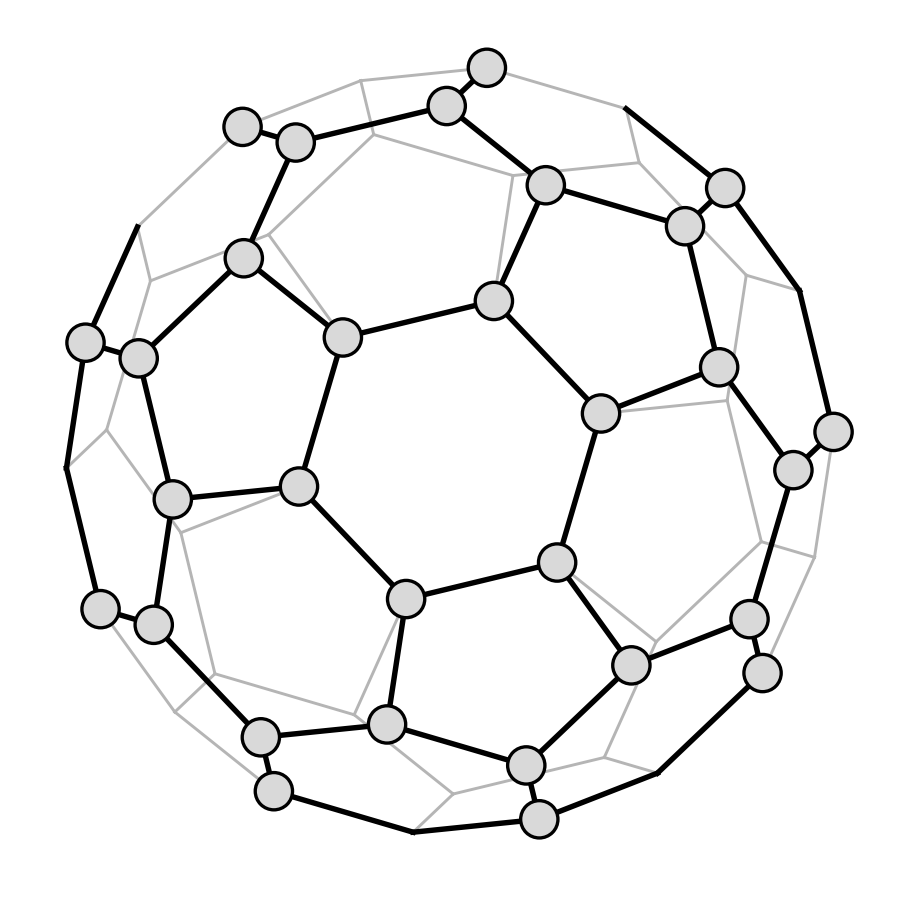
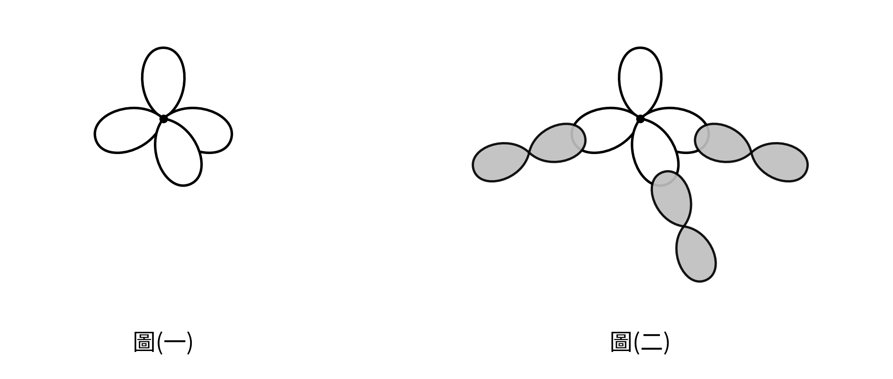

基礎題
下列有關混成軌域的敘述，何者正確？
- (A) 1 個 2s 軌域與 3 個 2p 軌域混成後，得到 4 個形狀與能量都相同的 sp3 混成軌域
- (B) 混成是指兩個不同原子的軌域互相重疊
- (C) sp2 混成的原子，3 個 p 軌域都參與混成
- (D) 混成軌域主要用來形成 π 鍵
- (E) sp 混成軌域之間的夾角為 120°
看答案與詳解
答案：(A)
(B) ✘ 混成是同一個原子內能量相近的軌域重新組合；不同原子間的軌域重疊是成鍵。
(C) ✘ sp2 只用 1 個 s 與 2 個 p，還留下 1 個未混成的 p 軌域。
(D) ✘ 混成軌域用來形成 σ 鍵或放孤對電子；π 鍵由未混成的 p 軌域形成。
(E) ✘ sp 混成軌域夾角 180°；120° 是 sp2。
下列各分子中心原子的「σ 鍵數＋孤對電子對數」與混成軌域的配對，何者正確？
- (A) BF3：4，sp3
- (B) NH3：3，sp2
- (C) H2O：2，sp
- (D) CO2：2，sp
- (E) CH4：4，sp2
看答案與詳解
答案：(D)
(B) ✘ NH3：N 有 3 個 σ＋1 對孤對 → 4，sp3。
(C) ✘ H2O：O 有 2 個 σ＋2 對孤對 → 4，sp3。
(D) ✔ CO2：O＝C＝O，C 有 2 個 σ（雙鍵只算 1 個 σ）、無孤對 → 2，sp。
(E) ✘ CH4：4 個 σ → 4，但對應的是 sp3。
寫出各分子的中心原子利用何種軌域與其他原子鍵結？
(1) NF3
(2) BeH2
(3) F2C＝CF2
看答案與詳解
答案：(1) sp3 (2) sp (3) sp2
(1) NF3：N 有 3 個 σ＋1 對孤對＝4 → sp3。
(2) BeH2：Be 有 2 個 σ、無孤對＝2 → sp。
(3) F2C＝CF2：每個 C 有 3 個 σ（雙鍵算 1 個）、無孤對＝3 → sp2。
下列粒子中，哪一個的中心原子具有 sp2 混成軌域？
- (A) NH3
- (B) BCl3
- (C) PCl3
- (D) SO32−
看答案與詳解
答案：(B)
(B) ✔ BCl3：B 只有 3 個價電子，3σ、無孤對＝3 → sp2。
(C) ✘ PCl3：3σ＋1 對孤對＝4 → sp3。
(D) ✘ SO32−：價電子共 6＋6×3＋2＝26 個，S 接 3 個 O 後還剩 1 對孤對，3σ＋1＝4 → sp3。
有關 CH4、NH3、H2O 三種分子的敘述，哪些正確？（多選）
- (A) 三者的中心原子皆為 sp3 混成
- (B) 中心原子上的孤對電子對數依序為 0、1、2
- (C) 鍵角大小：H2O＞NH3＞CH4
- (D) 三者的分子形狀皆為正四面體
- (E) NH3 的孤對電子位於 N 的 sp3 混成軌域中
看答案與詳解
答案：(A)(B)(E)
(B) ✔ C 無孤對、N 1 對、O 2 對。
(C) ✘ 孤對電子斥力較大，把鍵結電子對擠近，鍵角 CH4（109.5°）＞NH3（107°）＞H2O（104.5°）。
(D) ✘ 形狀只看原子位置：CH4 正四面體、NH3 三角錐、H2O 彎曲形。
(E) ✔ 混成軌域可用來形成 σ 鍵或放孤對電子。
依混成軌域的觀念，下列化合物的碳原子或中心原子，何者以 sp 軌域鍵結？（多選）
- (A) 乙炔
- (B) 苯
- (C) 二氧化碳
- (D) 一氧化碳
- (E) 氯化鈹
看答案與詳解
答案：(A)(C)(D)(E)
(B) ✘ 苯：每個 C 有 3 個 σ → sp2。
(C) ✔ CO2：O＝C＝O，C 有 2 個 σ → sp。
(D) ✔ CO：C≡O，C 有 1 個 σ＋1 對孤對＝2 → sp。
(E) ✔ BeCl2：Be 有 2 個 σ、無孤對 → sp。
下列各化合物中，何者與三氯化硼有相同的混成鍵結？（多選）
- (A) 苯
- (B) 乙炔
- (C) 二氯化鈹
- (D) 二氯乙烯
- (E) 四氯化碳
看答案與詳解
答案：(A)(D)
(A) ✔ 苯：每個 C 接 3 個原子 → sp2。
(B) ✘ 乙炔：C 為 sp。
(C) ✘ BeCl2：Be 為 sp。
(D) ✔ 二氯乙烯：C＝C 的兩個 C 各有 3 個 σ → sp2（不論哪一種異構物都一樣）。
(E) ✘ CCl4：C 為 sp3。
比較乙烷（C2H6）、乙烯（C2H4）、乙炔（C2H2）三種分子，依序回答下列問題：
(1) 碳原子的混成軌域
(2) H－C－C 鍵角的大約值
(3) 一個分子中 π 鍵的數目
看答案與詳解
答案：(1) sp3、sp2、sp (2) 109.5°、120°、180° (3) 0、1、2
(2) 鍵角由混成決定：sp3 約 109.5°、sp2 約 120°、sp 為 180°。
(3) 單鍵沒有 π 鍵、雙鍵 1 個、參鍵 2 個 → 0、1、2。
下列各分子中指定鍵結所用的軌域，何者正確？
- (A) BF3 的 B－F 鍵：σ(sp3－p)
- (B) C2H4 的 C－H 鍵：σ(sp－s)
- (C) BeCl2 的 Be－Cl 鍵：σ(sp－p)
- (D) CH4 的 C－H 鍵：σ(sp2－s)
- (E) C2H2 的碳－碳 σ 鍵：σ(sp2－sp2)
看答案與詳解
答案：(C)
(A) ✘ BF3：B 為 3σ、無孤對 → sp2，應為 σ(sp2－p)。
(B) ✘ C2H4：C 為 sp2，應為 σ(sp2－s)。
(C) ✔ BeCl2：Be 為 2σ、無孤對 → sp，Cl 用 3p → σ(sp－p)。
(D) ✘ CH4：C 為 sp3，應為 σ(sp3－s)。
(E) ✘ C2H2：C 為 sp，碳－碳 σ 鍵為 σ(sp－sp)。
碳六十，是新發現的碳的同素異形體。它的分子 C60 是由 60 個碳原子組成，它的分子形狀像足球，如右圖。試問其碳上的混成軌域與下列何者最接近？

- (A) 鑽石中的碳
- (B) 石墨中的碳
- (C) 二氧化碳中的碳
- (D) 聚乙烯中的碳
看答案與詳解
答案：(B)
(A) ✘ 鑽石：每個 C 接 4 個 C → sp3。
(B) ✔ 石墨：每個 C 接 3 個 C → sp2。
(C) ✘ CO2：C 有 2 個 σ → sp。
(D) ✘ 聚乙烯 －CH2－CH2－：C 都是 4 個單鍵 → sp3。
進階題
碳原子與 4 個氫原子結合成 CH4 時，可用「電子提升→混成→成鍵」三個步驟來說明：
(1) 寫出碳原子基態與電子提升後的價電子組態
(2) 混成後得到幾個、哪一種混成軌域？每個軌域各有幾個電子？
(3) 每個 C－H 鍵是由哪兩種軌域重疊而成？
看答案與詳解
答案：(1) 2s22p2 → 2s12p3 (2) 4 個 sp3 混成軌域，各有 1 個電子 (3) C 的 sp3 與 H 的 1s，σ(sp3－s)
(2) 1 個 2s＋3 個 2p 共 4 個軌域混成 → 4 個 sp3 混成軌域，4 個電子各占 1 個。
(3) 每個 sp3 軌域與 H 的 1s 軌域頭對頭重疊 → σ(sp3－s)，4 個鍵完全相同，鍵角 109.5°。
例如 2 個 H 原子使用 1s 互相結合生成 H2 分子時，以 (s－s) 表示其軌域重疊情形，則下列分子的原子間軌域重疊情形何者正確？（多選）
- (A) Cl2 (p－p)
- (B) H－Cl (s－p)
- (C) CCl4 (sp3－s)
- (D) OH2 (sp3－s)
- (E) NH3 (sp2－p)
看答案與詳解
答案：(A)(B)(D)
(A) ✔ Cl2：兩個 Cl 各用 3p → p－p。
(B) ✔ HCl：H 的 1s 與 Cl 的 3p → s－p。
(C) ✘ CCl4：C 為 sp3，Cl 用 3p → 應為 sp3－p。
(D) ✔ H2O：O 為 sp3，H 用 1s → sp3－s。
(E) ✘ NH3：N 為 3σ＋1 對孤對 → sp3，H 用 1s → 應為 sp3－s。
若某分子的中心原子混成軌域如圖(一)，且中心與外圍原子的鍵結情形可用圖(二)表示，則此分子可為何？

- (A) PCl3
- (B) NH3
- (C) CF4
- (D) SO3
- (E) H2S
看答案與詳解
答案：(A)
圖(二)：其中 3 個 sp3 軌域各與外圍原子的 p 軌域（啞鈴形）重疊成 σ(sp3－p)，剩下 1 個沒有成鍵（放孤對電子）→ 條件是「sp3、3 個鍵、1 對孤對、外圍原子用 p 軌域」。
(A) ✔ PCl3：P 為 3σ＋1 對孤對 → sp3，Cl 用 3p。
(B) ✘ NH3：外圍 H 用 1s，是 σ(sp3－s)。
(C) ✘ CF4：4 個鍵、無孤對。
(D) ✘ SO3：S 為 sp2。
(E) ✘ H2S：只有 2 個鍵，且 H 用 1s。
下列何者與 O3 有相同的混成軌域？
- (A) NF3
- (B) NH4+
- (C) N2O4
- (D) CO2
看答案與詳解
答案：(C)
(A) ✘ NF3：3σ＋1 對孤對＝4 → sp3。
(B) ✘ NH4+：4σ → sp3。
(C) ✔ N2O4（O2N－NO2）：每個 N 接 2 個 O 與 1 個 N，3σ、無孤對＝3 → sp2。
(D) ✘ CO2：2σ → sp。
何組中心原子之鍵結軌域不同？（多選）
- (A) F2O、N2O
- (B) H2O、H3O+
- (C) O3、SO2
- (D) BF4−、BF3
- (E) BF3、SO3
看答案與詳解
答案：(A)(D)
(A) ✔ F2O：2＋2＝4 → sp3；N2O（N－N－O，中心 N）：2＋0＝2 → sp，不同。
(B) ✘ H2O：2＋2＝4；H3O+：3＋1＝4，都是 sp3。
(C) ✘ O3：2＋1＝3；SO2：2＋1＝3，都是 sp2。
(D) ✔ BF4−：4＋0＝4 → sp3；BF3：3＋0＝3 → sp2，不同。
(E) ✘ BF3、SO3：都是 3＋0＝3 → sp2。
比較乙烷、乙烯、乙炔三種分子，下列敘述哪些正確？（多選）
- (A) 碳原子混成軌域的 s 性質：乙炔＞乙烯＞乙烷
- (B) 碳－碳鍵長：乙烷＞乙烯＞乙炔
- (C) 碳－氫鍵長：乙炔＞乙烯＞乙烷
- (D) 乙烷分子中的 8 個原子可以全部在同一平面上
- (E) 一個分子所含的 σ 鍵數：乙烷 7 個、乙烯 5 個、乙炔 3 個
看答案與詳解
答案：(A)(B)(E)
(A) ✔ s 性質：sp（1/2）＞sp2（1/3）＞sp3（1/4）。
(B) ✔ 鍵數愈多鍵長愈短：單鍵＞雙鍵＞參鍵。
(C) ✘ s 性質愈多，混成軌域愈靠近原子核，C－H 愈短：乙烷＞乙烯＞乙炔，順序相反。
(D) ✘ 乙烷的碳是 sp3（四面體），8 個原子不可能全部共平面；乙烯 6 個原子共平面，乙炔 4 個原子共直線
(E) ✔ 乙烷：6 個 C－H＋1 個 C－C＝7；乙烯：4＋1＝5；乙炔：2＋1＝3（雙鍵、參鍵都只含 1 個 σ）。
有關苯、石墨與金剛石中碳原子的鍵結，下列敘述哪些正確？（多選）
- (A) 苯與石墨中的碳原子皆為 sp2 混成
- (B) 金剛石中每個碳原子以 sp3 混成軌域與 4 個碳原子鍵結
- (C) 苯分子的環上有 3 個碳－碳單鍵與 3 個碳－碳雙鍵，鍵長有兩種
- (D) 苯的每個碳原子各有 1 個未混成的 p 軌域，垂直於分子平面
- (E) 石墨中每個碳原子與 4 個碳原子形成 σ 鍵
看答案與詳解
答案：(A)(B)(D)
(B) ✔ 金剛石每個 C 接 4 個 C，4 個 σ → sp3。
(C) ✘ 苯的 6 個 π 電子平均分布在整個環上（共振），6 個碳－碳鍵等長，介於單鍵與雙鍵之間。
(D) ✔ sp2 混成留下 1 個 p 軌域，垂直於 sp2 所在的平面，6 個 p 軌域互相平行、連成一圈。
(E) ✘ 石墨同一層內每個 C 只與 3 個 C 形成 σ 鍵。
下列分子，何者之原子都在一平面上？（多選）
- (A) 苯
- (B) 肼
- (C) 過氧化氫
- (D) 乙烯
- (E) 丙二烯
看答案與詳解
答案：(A)(D)
(A) ✔ 苯：6 個 C 都是 sp2，12 個原子共平面。
(B) ✘ 肼 N2H4：N 為 3σ＋1 對孤對 → sp3，各 N 周圍呈三角錐。
(C) ✘ 過氧化氫 H2O2：O 為 sp3，兩個 O－H 不在同一平面上（像翻開的書）。
(D) ✔ 乙烯：2 個 C 都是 sp2，6 個原子共平面。
(E) ✘ 丙二烯 H2C＝C＝CH2：中間的 C 為 sp，它的兩個 π 鍵互相垂直，所以兩端 CH2 所在的平面互相垂直。
丙烯腈（CH2＝CH－C≡N）是製造壓克力纖維的原料。將碳原子由左至右編號為 C1、C2、C3，回答下列問題：
(1) C1、C2、C3 的混成軌域依序為何？
(2) 一個分子中共有幾個 σ 鍵、幾個 π 鍵？
(3) C2－C3 之間的 σ 鍵是由哪兩種軌域重疊而成？
看答案與詳解
答案：(1) sp2、sp2、sp (2) σ 鍵 6 個、π 鍵 3 個 (3) C2 的 sp2 與 C3 的 sp，σ(sp2－sp)
(2) σ 鍵：C－H 3 個＋C＝C 1 個＋C－C 1 個＋C≡N 1 個＝6 個；π 鍵：雙鍵 1 個＋參鍵 2 個＝3 個。
(3) C2 用 sp2、C3 用 sp 混成軌域頭對頭重疊 → σ(sp2－sp)。
下列哪一個分子同時含有 sp3、sp2、sp 三種混成的碳原子？
- (A) CH3－CH＝CH2
- (B) CH3－C≡CH
- (C) CH2＝CH－C≡CH
- (D) CH3－CH＝C＝CH2
- (E) C6H5－CH3（甲苯）
看答案與詳解
答案：(D)
(A) ✘ 丙烯：sp3、sp2、sp2，沒有 sp。
(B) ✘ 丙炔：sp3、sp、sp，沒有 sp2。
(C) ✘ sp2、sp2、sp、sp，沒有 sp3。
(D) ✔ 由左至右：sp3、sp2、sp（同時接 2 個雙鍵）、sp2，三種都有。
(E) ✘ 甲苯：苯環 6 個 C 為 sp2，－CH3 為 sp3，沒有 sp。
大考／素養題
下列有關 C2H4 鍵結的敘述，何者正確？
- (A) 碳以 sp2 的混成軌域形成 π 鍵
- (B) 碳－碳間以 p 軌域形成極性共價鍵
- (C) 分子中 H－C－C 的角度約為 120°
- (D) 它的分子不具平面結構
看答案與詳解
答案：(C)
(A) ✘ sp2 混成軌域形成的是 σ 鍵；π 鍵由未混成的 p 軌域側面重疊而成。
(B) ✘ 碳－碳是相同原子間的鍵，為非極性共價鍵。
(C) ✔ sp2 混成，鍵角約 120°。
(D) ✘ 乙烯 6 個原子共平面。
下列各分子中，何者含 sp 混成軌域的碳原子？（多選）
- (A) HC≡CH
- (B) CH3COCH3
- (C) H2C＝C＝CH2
- (D) CO
- (E) H2C＝CH－CH＝CH2
看答案與詳解
答案：(A)(C)(D)
(A) ✔ HC≡CH：兩個 C 都是 sp。
(B) ✘ 丙酮：兩個 －CH3 的 C 為 sp3，C＝O 的 C 為 sp2。
(C) ✔ 丙二烯中間的 C 接 2 個雙鍵，只有 2 個 σ → sp。
(D) ✔ CO（:C≡O:）：C 有 1 個 σ＋1 對孤對＝2 → sp。
(E) ✘ 1,3-丁二烯：4 個 C 各只有 1 個雙鍵 → 全為 sp2。
有關 CO2、SO2、SO3、NH3、SnCl4、HCN 六種氣體分子之敘述，何者正確？（多選）
- (A) 所有原子均在同一平面上的只有一種
- (B) 中心原子的混成軌域形式共有二種
- (C) 具有分子偶極矩的共有三種
- (D) 含有 π 鍵的共有四種
- (E) 分子的形狀共有五種
看答案與詳解
答案：(C)(D)(E)
(A) ✘ 共平面的有 CO2、SO2、SO3、HCN 四種。
(B) ✘ 有 sp、sp2、sp3 三種。
(C) ✔ SO2、NH3、HCN 三種。
(D) ✔ CO2、SO2、SO3、HCN 四種。
(E) ✔ 直線形、彎曲形、平面三角形、三角錐、正四面體，共五種。
下列有關 SO2、SO3、SO32− 及 SO42− 的各項性質比較，何者正確？（多選）
- (A) 硫原子的混成軌域依次為 sp2、sp2、sp3、sp3
- (B) 僅有 SO2 的硫原子具有未鍵結電子對
- (C) SO2 與 SO3 兩種分子均具有分子偶極矩
- (D) 硫與氧之間的鍵長大小為：SO2＞SO3＞SO32−＞SO42−
- (E) O－S－O 鍵角大小順序為：SO3＞SO2＞SO42−＞SO32−
看答案與詳解
答案：(A)(E)
(A) ✔ 依次為 sp2、sp2、sp3、sp3。
(B) ✘ SO2 與 SO32− 的 S 都有 1 對未鍵結電子對。
(C) ✘ SO3 為對稱的平面三角形，偶極矩為 0。
(D) ✘ 有 π 鍵參與的 SO2、SO3 鍵較短，SO2 不會最長，順序不對。
(E) ✔ SO3（120°）＞SO2（有 1 對孤對，略小於 120°）＞SO42−（109.5°）＞SO32−（有 1 對孤對，小於 109.5°）。
石墨烯是只有一層碳原子厚的平面材料，碳原子排列成蜂巢狀，每個碳原子都與 3 個碳原子鍵結，導電性極佳。若使石墨烯的每個碳原子再各接上 1 個氫原子，可得到稱為「石墨烷」的材料，其導電性幾乎完全消失。依混成軌域的觀念回答下列問題：
(1) 石墨烯中碳原子的混成軌域為何？C－C－C 鍵角為幾度？
(2) 說明石墨烯能導電的原因（須指出所用的軌域與其方向）。
(3) 石墨烷中碳原子的混成軌域為何？所有碳原子是否仍共平面？並說明它不導電的原因。
看答案與詳解
答案：(1) sp2，120° (2) 每個 C 有 1 個垂直於平面的未混成 p 軌域，互相平行、側面重疊成遍布整層的非定域 π 鍵，電子可在層內移動 (3) sp3；不再共平面；C 沒有未混成的 p 軌域，π 電子都用去形成 C－H 鍵，沒有可移動的電子
(2) sp2 混成只用掉 2 個 p 軌域，每個 C 還有 1 個未混成的 p 軌域（含 1 個電子），垂直於碳原子平面；這些 p 軌域互相平行、側面重疊，形成遍布整層的非定域 π 鍵，電子可以在層內自由移動，所以能導電（與石墨、苯的情形相同）。
(3) 每個 C 變成接 3 個 C＋1 個 H：4 個 σ → sp3，鍵角約 109.5°，碳原子不再共平面（呈皺摺狀）。4 個價電子全部用於 σ 鍵，沒有未混成的 p 軌域，也就沒有可移動的 π 電子，所以不導電（與金剛石相同）。